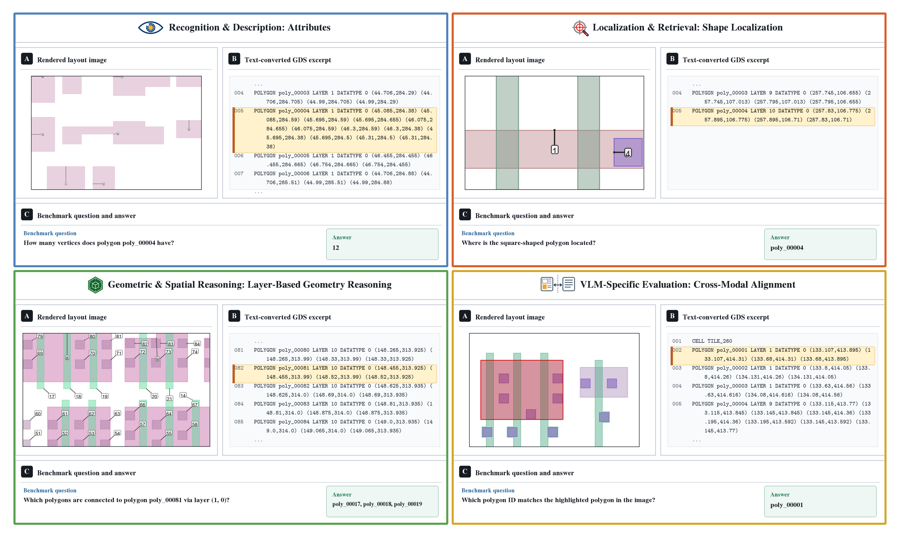
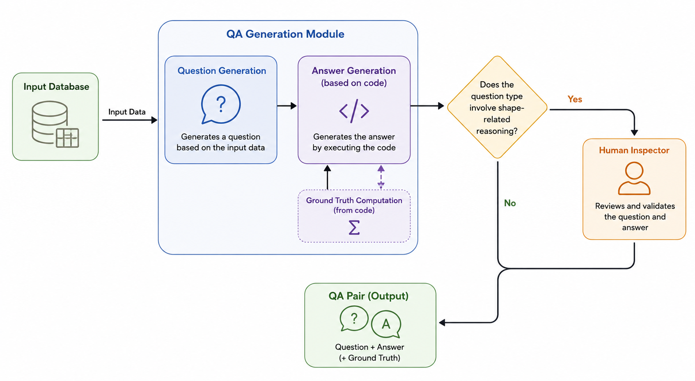

ChipLayoutBench
A Multimodal Benchmark for Vision-Language Models
in Semiconductor Layout Understanding

ChipLayoutBench evaluates exact geometric reasoning and fine-grained multimodal grounding over semiconductor layouts.
Abstract
Recent multimodal benchmarks have significantly expanded the evaluation of visual reasoning in vision-language models, but they primarily focus on holistic semantic understanding. Engineering problems can instead require models to connect visual regions with exact coordinate-level representations and reason over precise quantities.
We introduce ChipLayoutBench, the first benchmark for general semiconductor layout understanding, with text-only, image+metadata, and multimodal settings across diverse reasoning and grounding tasks. Evaluations of eight recent VLMs show that combining both modalities benefits some models but does not consistently outperform text alone. Dedicated VLM-specific tasks further reveal persistent difficulties with precise multimodal grounding.
Benchmark
Questions are generated from real layouts using predefined templates and deterministic geometric computations. Most ground-truth answers are code-verified; shape-related questions are manually inspected.

Question-answer construction pipeline.
Results
Text-based representations achieve the strongest overall performance. Image-only inputs are substantially harder, and adding the image does not consistently improve performance—even for questions where visual cues should be useful.
| Model | Text | Image | Both |
|---|---|---|---|
| Qwen3.5-27B | 76.8 | 35.7 | 71.3 |
| Qwen3.6-27B | 76.5 | 36.1 | 73.8 |
| Gemma4-31B-Instruct | 77.1 | 31.5 | 72.7 |
| GLM-4.6V | 51.0 | 21.8 | 58.3 |
| InternVL3.5-241B-A28B | 41.2 | 20.2 | 37.1 |
| Qwen3.5-397B-A17B | 77.4 | 39.0 | 75.2 |
| GPT5.4-mini | 45.5 | 32.8 | 37.9 |
| Gemini3.1-flash-lite | 69.9 | 35.1 | 65.6 |
Average benchmark score by input modality. Higher is better.
Citation
@inproceedings{ryou2026chiplayoutbench,
title = {ChipLayoutBench: A Multimodal Benchmark for Vision-Language Models in Semiconductor Layout Understanding},
author = {Ryou, Serim and Yoo, Jayeon and Jeong, Minjae and Kim, Won Hwa and Park, Seong-Jin},
booktitle = {Findings of the Association for Computational Linguistics: EMNLP 2026},
year = {2026},
url = {https://openreview.net/forum?id=oQW5fqfPd8}
}